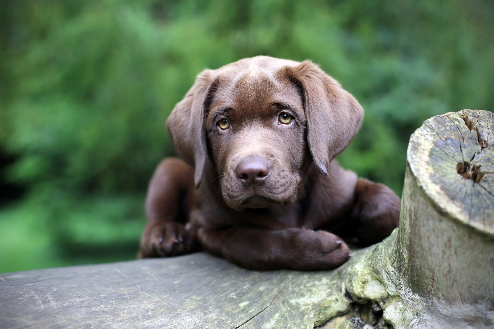
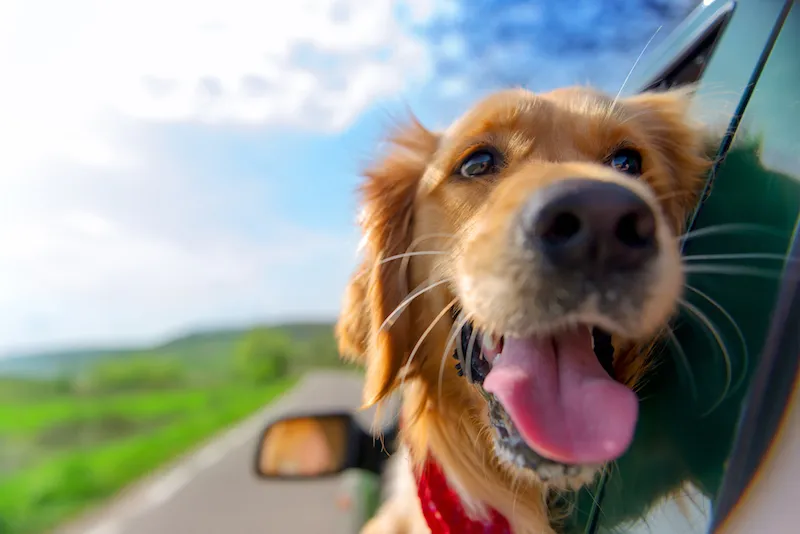

Fundada en 2022, Amigos Perdidos tiene como objetivo ayudar a encontrar hogares permanentes a los animales sin hogar. Con un enfoque en la comunidad y la colaboración, hemos trabajado arduamente para reunir a amantes de los animales y promover la adopción responsable de mascotas.
Nuestro equipo trabaja arduamente para conectar a personas interesadas en adoptar una mascota con animales en busca de hogar. Nos esforzamos por proporcionar una experiencia en línea fácil y eficiente para los visitantes y, al mismo tiempo, brindar a los refugios de animales y organizaciones sin fines de lucro la visibilidad y el apoyo que necesitan.
Fundada en 2022, Amigos Perdidos tiene como objetivo ayudar a encontrar hogares permanentes a los animales sin hogar. Con un enfoque en la comunidad y la colaboración, hemos trabajado arduamente para reunir a amantes de los animales y promover la adopción responsable de mascotas.
Nuestro equipo trabaja arduamente para conectar a personas interesadas en adoptar una mascota con animales en busca de hogar. Nos esforzamos por proporcionar una experiencia en línea fácil y eficiente para los visitantes y, al mismo tiempo, brindar a los refugios de animales y organizaciones sin fines de lucro la visibilidad y el apoyo que necesitan.
Creemos en la importancia de proporcionar información precisa y actualizada sobre cuidado de mascotas y en apoyar a los nuevos dueños a largo plazo.
Valoramos la compasión, la responsabilidad y la educación en todo lo que hacemos. Nos comprometemos a promover la adopción responsable de mascotas y a trabajar con organizaciones sin fines de lucro y refugios de animales para lograr este objetivo.